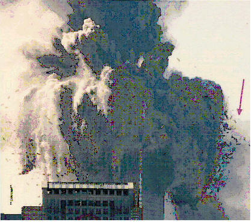
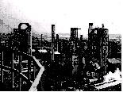

Honorable Madam Chair, Judiciary Committee, Montana House of Representatives
~
“Follow the money.” - Deep Throat
~

Explosions in New York City on 911
Banking, Secrecy, and Statecraft
Honorable Madam Chair, Judiciary Committee, Montana House of Representatives:
Let's look at what can happen, or rather, what has happened already, when Statecraft is married to Secrecy. In this letter I would like to focus primarily on the CIA's use of banking – and in the next letter we shall look into al Qaeda's use of banking.
Three notorious banks have been exposed as CIA instruments. Each bank was involved in the financing of international illegal drug production, illegal drug transportation, illegal drug distribution, and illegal marketing. Each bank was involved in procurement of, transportation of, and sales of illegal arms shipments. Each bank was involved in money-laundering the profits from illegal drug sales and illegal arms sales. The three banks were, respectively, Castle Bank and Trust of Nassau; Nugan-Hand Bank; and the BCCI (Bank of Commerce and Credit International).
Each of these banks was heavily staffed with U.S. Intelligence community operatives and former-operatives/officers, including men who ranked as high as Director of Central Intelligence at CIA and U.S. military Generals and Admirals. The first bank mentioned, Castle Bank, was investigated by the IRS for tax evasion, but that investigation was terminated by the CIA. The latter two banks have been investigated by governments and found to have practiced illegal drug operations, illegal armament-sales operations, and money-laundering. Each investigation of each bank has been consistently and ardently interdicted by the CIA, for obvious reasons.

Anglo-Iranian Oil Company – AP photo, 1951
Castle Bank and Trust of Nassau
Let's begin with Castle Bank and Trust of Nassau, a bank about which we know the least. Borrowing from Professor McCoy's “The Politics of Heroin: CIA Complicity In The Global Drug Trade”, (1), we read:
Both Sydney police and Wall Street Journal reporter Jonathan Kwitny came away from their long investigations of Nugan Hand convinced that there may well have been some connection between the bank's sudden rise and the antecedent demise of a CIA proprietary, the Castle Bank and Trust of Nassau. After retiring from the CIA, Paul Helliwell, founder of such agency "proprietaries" as SEA Supply Inc. of Bangkok and Air America, opened a law office in Miami and formed Castle Bank offshore in nearby Nassau to cover the agency's covert money movements. In 1973 agents of the Internal Revenue Service were able to photograph the Castle Bank's customer list while a bank executive dined in a posh Key Biscayne restaurant with a woman described as an IRS "informant". Reviewing the purloined documents, IRS investigators found that the 308 Castle Bank customers on the list had moved $250 million to foreign numbered accounts. Depositors included Playboy publisher Hugh Hefner, Penthouse magazine publisher Robert Guccione, and some major organized crime figures---Morris Dalitz, Morris Kleinman, and Samuel A. Tucker. Elated by the find, investigators formed Project Haven to make "the single biggest tax-evasion strike in IRS history." Suddenly, the IRS announced that it was dropping the investigation because of "legal problems". According to a later investigation by the Wall Street Journal, "pressure from the Central Intelligence Agency ... caused the Justice Department to drop what could have been the biggest tax evasion case of all time." The CIA invoked "national security" since it was using the Castle Bank "for the funding of clandestine operations against Cuba and other intelligence operations directed at countries in Latin America and the Far East." By the time Helliwell died from emphysema on Christmas Eve, 1976, Castle Bank had been liquidated.
(End excerpt from McCoy's “The Politics of Heroin”)
~
From that accounting we see that National Security was invoked to prevent the IRS from exposing one of the CIA's covert proprietaries, an offshore bank which CIA used for “secure” money transfers related to illegal clandestine activities. Because the bank was quickly liquidated we know very little about it, except that it was created by CIA as a proprietary.
According to Victor Marchetti, author of “The CIA and the Cult of Intelligence” (2 – Chapter Five, “Proprietary Organizations”, page 133 in hard-cover edition) a CIA “proprietary” is:
[proprietaries] “....are ostensibly private institutions and businesses which are in fact financed and controlled by the CIA. From behind their commercial and sometimes non-profit covers, the agency is able to carry out a multitude of clandestine activities – usually covert-action operations. Many of the firms are legally incorporated in Delaware because of that state's lenient regulation of corporations, but the CIA has not hesitated to use other states when it found them more convenient.”
Marchetti goes on to name some CIA proprietary airline companies (remember, his book was published in 1974, so things have changed) – Civil Air Transport, Intermountain Aviation, Southern Air Transport, Air Asia, and Air America. Marchetti states: “Incredible as it may seem, the CIA is currently the owner of one of the biggest – if not the biggest – fleets of 'commercial' airplanes in the world.” (2; page 137)
One last passage from Marchetti and Marks should be entered here. Begin quoted passage from pages 137 and 138:
Civil Air Transport (CAT), the original link in the CIA air empire, was started in China in 1946, one year before the agency itself was established by Congress. CAT was an offshoot of General Claire Chennault's Flying Tigers, and during its early days it flew missions of every kind in support of Chiang Kai-shek's unsuccessful effort to retain control of the Chinese mainland. When Chiang was finally driven out of China in 1949, CAT went with him to Taiwan and continued its clandestine air operations. In 1950 CAT was reorganized as a Delaware Corporation under a CIA proprietary holding company called Pacific Corporation.
In a top-secret memorandum to General Maxwell Taylor on “unconventional-warfare resources in Southeast Asia” in 1961, published in “The Pentagon Papers”, Brigadier General Edward Lansdale described CAT's function as follows:
"CAT is a commercial air line engaged in scheduled and non-scheduled air operations throughout the Far East, with headquarters and large maintenance facilities located in Taiwan. CAT, a CIA proprietary, provides air logistical support under commercial cover to most CIA and other U.S. Government agencies' requirements. CAT supports covert and clandestine air operations by providing trained and experienced personnel, procurement of supplies and equipment through overt commercial channels, and the maintenance of a fairly large inventory of transport and other type aircraft under both Chinat (Chinese Nationalist) and U.S. registry.
"CAT has demonstrated its capability on numerous occasions to meet all types of contingency or long-term covert air requirements in support of U.S. objectives. During the past ten years, it has had some notable achievements, including support of the Chinese Nationalist withdrawal from the mainland, air drop support to the French at Dien Bien Phu, complete logistical and tactical air support for the Indonesian operation, air lifts of refugees from North Vietnam, more than 200 overflights of Mainland China and Tibet, and extensive air support in Laos during the current crisis... "
The “more than 200 overflights of Mainland China and Tibet” that Lansdale mentioned occurred mainly during the 1950s (but continued well into the 1960s), when the CIA supported, on its own and in cooperation with the Chiang Kai-shek government, guerrilla operations against China.
(End quoted passages from “The CIA and the Cult of Intelligence” by Marchetti and Marks with inject from “The Pentagon Papers”.}
~
I would like to note that the CIA has long been in the business of “business”. CIA can and may at any time create an insurance company, a manufacturing plant, any sort of service company, a computer company, a shipping company, a trucking company, an oil company, or any other sort of commercial front for CIA presence inside a targeted industry or group. The Baskins-Robbins truck, or the plumbing company truck, or the heating and air-conditioning truck you see on the street may or may not be a CIA proprietary. And as we shall see herein, it's anyone's guess whether any particular bank is a CIA proprietary or not. We do know that Castle Bank and Trust of Nassau was created by Helliwell as a CIA proprietary.
That instrument's liquidation left a vacuum in CIA's operations, and another bank was quickly needed. The bank which was destined to replace Castle Bank and Trust was Nugan-Hand Bank, originally from Australia. Two Americans, Frank Nugan and Michael Hand, created the bank. We would suppose that they created the bank without help from the CIA, but when CIA was frantically searching for a replacement for Castle Bank, the Nugan-Hand venture seemed tailor-made. Michael Hand had worked with some unsavory CIA people in Southeast Asia and had contacts which included Bernie Houghton. Let's look briefly into how CIA moved into Nugan-Hand Bank.
Nugan Hand Bank, Inc.
Drawing from pages 461-472 in Alfred W. McCoy's
book, "The Politics of Heroin: CIA Complicity In The Drug Trade",
we read:
~
begin quoted passages from “The Politics of Heroin: CIA Complicity In The Global Drug Trade”.
At 4:00 a.m. on January 27, 1980, a state police officer patrolling a country road west of Sydney, Australia, noticed a late-model Mercedes sedan parked by the side of the road and stopped to examine it. Inside the constable found the body of a middle-aged male slumped forward, still holding the rifle he had apparently used to shoot himself in the head. Searching his wallet, the police found personal identification for one Frank Nugan, a merchant banker of Sydney, and a calling card from one William Colby, a New York lawyer who had recently retired as director of the U.S. Central Intelligence Agency.
The circumstances of Nugan's suicide and the bank's spectacular collapse only six months later have inspired hundreds of press probes, three major Australian government investigations, and a lengthy book by one of America's best investigative reporters. [EA note: that would be Jonathan Kwitny of the Wall Street Journal] All have asked the same basic question: What was the relationship between the Nugan Hand Bank and the CIA? Although we have more details about the bank than about any other company with similarly ambiguous CIA connections, the question still defies a concise answer. The Nugan Hand Bank remains a great espionage mystery.
Although the large question about the bank and the agency will probably never be answered, Nugan Hand's twisted history does offer insights into the world of CIA espionage---in particular, that gray area of alumni, allies, assets, and affiliated companies that do so much of the agency's covert work. In his memoirs and public statements, William Colby has portrayed his CIA colleagues as "honorable men", patriots who simply would not, could not tolerate any involvement in drugs by agency personnel or covert assets. Whatever it may or may not have been, the Nugan Hand Bank was certainly two things: 1) an employer of many retired CIA agents and 2) heavily involved in narcotics trafficking. Unlike most of the agency's faceless espionage, the carefully documented Nugan Hand case affords a close look at the moral universe of covert operations, particularly the gray sector of CIA proprietaries and affiliates. The Nugan Hand case shows how the CIA's secret war in Laos, interwoven with the tribal opium trade, produced a covert action cadre with a tolerance for drug dealing.
End quoted passages from “The Politics of Heroin”.
~
Madam Chair, before we look at who was involved in the Nugan-Hand Bank, let us recall a popular movie which circulates, and has been circulating for years within the public through video rental stores. The movie is “Air America”, and it stars Mel Gibson. Millions of Americans have seen the movie – yet many viewers seem to miss a not-so-subtle point which is made in that movie. That point is the open portrayal of CIA's use of proprietary airplanes piloted by U.S. pilots who were paid by U.S. tax dollars to fly opium and heroin from Southeast Asia to world markets, including into France. (“The French Connection”)
Although I have never spoken with him, and do not know him, I submit that Mel Gibson knew exactly what he was portraying in that movie. My tour of duty with the U.S. Marine Corps in Vietnam provided to me an understanding of the culture(s) of Southeast Asia, the political climate in which American “interests” operated there, and the feasibility and practicality of random illegal activities which were powerful enough to tempt anyone, more or less, into the commission of crimes. But it all started somewhere, and I think that we should remember a fact which was revealed in 1973 by former Executive Assistant to the Director of Clandestine Services at CIA, Mr. Victor Marchetti.
Victor Marchetti (and his co-author, John D. Marks, former State Department Intelligence officer) published, over the ardent and frenzied objections of CIA, the fact that the United States had gone into Laos in the mid-1950s after the French had been evicted from Vietnam at Dien Bien Phu in 1954. (4)
Laos is a westerly next-door neighbor to Vietnam. The CIA created a thirty-six-thousand man secret army of mercenaries in Laos at that time, and for about nine years the CIA used that army to invade, literally and on the ground, China and North Vietnam. (Prior to 1975, “Vietnam” was legally named “Viet Nam”, two words instead of one. I note this while excusing my use of the single-word version inappropriately, regarding timing of events, in this discourse.) The American people were not told about the thirty-six-thousand hired-gun secret army which CIA put together in Laos for a number of years afterward. Thirty-six thousand armed and militarized mercenary thugs with CIA logistics and support makes quite a gang. While we may look at that particular operation in another letter, let us here note that many of the mercenaries employed by CIA in Laos were in fact remnants of Chiang Kai-shek's defeated army which had retreated to Taiwan in 1949 following Mao's victory. And let us recall that Chiang's army had been financed largely by the organized opium syndicate called the Chinese Green Gang and by the House of Charlie Soong. CIA recruited strongly from that remnant of Chiang's defeated army for mercenaries used in Southeast Asia, and many of them were employed in the business of CIA's control over and operation of the opium industry there. As we saw above, extensive air support for this was flown by CIA proprietaries.
During and throughout this nine-year debacle of criminal operations in Laos and Southeast Asia, which culminated at the botched raid which created the “Gulf of Tonkin incident” in 1964, the CIA's secret army oversaw and protected the opium industry across much of Southeast Asia, guarded its transportation and distribution systems, and braced in their positions of power all the CIA puppets, government leaders and chieftans, needed for the orchestration of a world-wide drug-smuggling syndicate. It was in this mele of madness that Michael Hand chanced to meet Bernie Houghton. Both were CIA. Both would do anything to thwart the spread of communism. Both were quite aware of the political value (as well as the commercial value) intrinsic to the opium trade. Both would later become Players in Nugan-Hand Bank.
The CIA's use of Southeast Asian opium producers is well documented and resourced in professor McCoy's book, and anyone wishing to know the truth of the CIA's central involvement in Southeast Asian narcotics trade is encouraged to read the book. Combining that book with the reports and articles of Peter Dale Scott and the investigations into the Mena, Arkansas scandal and the articles published in the San Jose Mercury furnishes the reader with the full knowledge of CIA drug-dealing. Now let's look at some of the people at Nugan-Hand Bank. From Alfred McCoy's “The Politics of Heroin”, the Nugan Hand chapter:
~Begin quoted passages from “The Politics of Heroin”:
In Pretoria, South Africa, Hand incorporated a trading company, Murdoch Lewis Proprietary Ltd., to take delivery of the arms shipments. At one point Hand summoned his Sydney employee Wilhemus Hans to Africa and met him in Rhodesia for discussions about formation of a helicopter squadron for the white settlers. Hand also made frequent phone calls to another bank employee, Frank Ward, later charged with arms dealing by Australian authorities in court proceedings that remained classified. While Hand waited in southern Africa to take delivery of arms, his close friend Bernie Houghton flew to Washington DC, with two Nugan Hand employees to arrange shipments. Significantly, Houghton made direct contact with CIA agent Edwin Wilson, then working for Task Force 157, a covert action arm of the Office of Naval Intelligence (ONI). With vast profits from his contract covert operations work, Wilson had purchased Mt. Airy Farms, a thousand-acre estate in northern Virginia where he often entertained his close comrades Thomas Clines and Theodore Shackley, Hand's former CIA superiors back in Laos who were now rising fast in the agency's Langley headquarters. After fifteen years as a career CIA officer, Wilson had transferred to Task Force 151 in 1973 and was operating from the offices of a cover company, World Marine Inc., at 1425 K Street in Washington. It was there that Wilson would meet Houghton and the two Nugan Hand men to arrange the African arms deal.
Australia's Joint Task force investigating the bank later learned details of the meetings from Dennis Schlachter, a World Marine employee whose evidence as a protected federal witness would lead to Wilson's 1982 conviction for illegal arms sales to Libya. Sometime in 1975 or early 1976 Schlachter first learned of the African arms deal when two CIA agents based in Indonesia, James Hawes and Robert Moore, called on Wilson at World Marine in Washington to discuss "an African arms deal" that, in these agents' words, "had to be put together". Sometime later, Houghton arrived from Sydney and came into World Marine's offices with the two Nugan Hand men to order the arms. Schlachter recalls chauffeuring Wilson and Hawes out to the agency's headquarters in Langley while the two discussed using Nugan Hand Bank to finance the shipments under the "cover of Task Force 157(ONI), ammunition, 3,000 weapons including machine guns, M-1s, carbines and others". With an end-user's certificate showing World Marine as the purchaser and an Australian company as the buyer, the arms left the United States from Boston for southern Africa in three separate shipments.
The Australian Joint Task Force found that Ed Wilson and Bernie Houghton were also involved in the ONI operation to transfer a highly classified spy ship to the Shah of Iran. Soon after joining Task Force 157 in 1973, Wilson had earned a $500,000 fee by delivering an earlier spy ship to Iran under the cover of World Marine. According to the witness Schlachter, in 1975 the U.S. Navy assigned Wilson to deliver another high-technology spy ship to Iran. Schlacter recalls that Houghton "was involved" in this deal, working with "funds...and...payouts". Significantly, Australian immigration records show that Houghton flew to Iran in March 1975 in the company of a U.S. Army Colonel. Working through Task Force 157, Wilson purchased the ship and ordered it to sail from England around Africa to Iran. When some "mix-up" developed, Schlachter recalls that "Wilson flew to Iran to correct it." Australian immigration records show that in January 1976 Wilson flew into Sydney and stayed in Australia for three days before flying on to Iran. (snip) ....
As the bank expanded dramatically in 1977-1978, Michael Hand recruited some of the most famous names in U.S. national security circles to join the bank as employees or associates. The key figure in making these contacts for Hand was Bernie Houghton, who had taken a more active role in the bank in 1976 after his bar business went bankrupt with debts of nearly a million dollars. In early 1977 Houghton recruited an old friend, Admiral Earl Yates, retired chief strategist for the U.S. Pacific Command, to serve as president of the Nugan Hand Bank. Through the admiral's influence, a succession of such senior appointments followed:
General Leroy J. Manor, former Pentagon counterinsurgency specialist and chief of staff of the U.S. Pacific Command, manager of the bank's Manila branch;
General Edwin F. Black, former OSS officer and commander of U.S. forces in Thailand, president of Nugan Hand, Inc., of Hawaii;
Dr. Guy Pauker, Asia expert for the Rand Corporation, a research firm under contract to the U.S. Defense Department, bank consultant.
Dale Holmgren, former chairman of the CIA's Civil Air Transport, [a CIA proprietary airline similar to Air America], manager of the bank's Taiwan branch;
William Colby, retired CIA director, Nugan Hand's legal counsel. (snip) ....
After decades inside the CIA, Wilson and his closest associates were finally forced out in the late 1970s, losing the mantle of CIA protection that had long masked their operations. In February 1976, Admiral Bobby Ray Inman, the new head of the Office of Naval Intelligence, ran into Ed Wilson by chance and learned to his surprise that this wheeler-dealer was one of his own operatives in Task Force 157. When Wilson's contract came up for renewal a few months later, ONI canceled it on Inman's orders, pushing the ex-CIA man into the private sector. There he prospered. Between June and September 1976 Wilson supplied Libya with thousands of CIA-designed bomb timers and more than 21 tons of Composition C-4, the most powerful nonnuclear explosive in America's arsenal--thereby providing Colonel Muammar al-Qaddafi with a potent weapon for his terrorist campaign in Europe and the Middle East. Over the next four years, Wilson recruited U.S. Green Berets to train Libyan commandos, delivered weapons for Qaddafi's terrorists, and even arranged assassinations for the Libyan dictator. One of Wilson's employees, former CIA officer Kevin Mulcahy, became concerned by these shipments and reported them to the CIA. But Wilson's old friend Theodore Shackley, now deputy director for Clandestine Services [at CIA], blocked any internal investigation. In April 1977 The Washington Post published an article on Wilson's activities stating that he "may have had contact with one or more current CIA employees", and the agency's new director, Admiral Stansfield Turner, started asking questions. He soon learned about Wilson's close friendship with his former CIA colleagues Clines and Shackley, then high in the Langley hierarchy. Over the opposition of senior CIA bureaucrats, Turner transferred the two to secondary jobs. A year later Thomas Clines resigned from the CIA after thirty years' service, borrowed $500,000 from Wilson to set up his own company, and soon won a $71 million contract for arms delivery to Egypt. No longer heir-apparent to the post of CIA director, Theodore Shackley resigned in Septermber 1979 and followed Clines into the consulting business.
End excerpted passages from “The Politics of Heroin”.
~
In the above passages we see some noteworthy names which we'll see again as we peek inside the Secret government which operates within our Federal government; inside the Secret agency within the Agency. Thomas Clines, Theodore Shackley, Bernie Houghton, Ed Wilson, Admiral Yates, Generals Black and Manor, Dale Holmgren, and former DCI of CIA William Colby. Their names will be joined by the names of people like Oliver North, Felix Rodriguez, Bill Clinton, G.H.W. Bush, John Poindexter, General Ralph Eberhard, Vice President Richard Cheney, Osama bin Laden, former Mayor of New York City Rudolph Giuliani, then-National Security Adviser Condoleezza Rice, William Casey, Secretary of State Colin Powell, Secretary of Defense Donald Rumsfeld, 911 Commission Chair Thomas Kean, John Negroponte, former DCI George Tenet, Paul Wolfowitz, Scooter Libby, David Rockefeller, Jamie Gorelick, former DCI John Deutch, U.S. Attorney General John Ashcroft, and numerous – numerous - others.
All of those people claim publicly to be acting in the nation's interest. All of them, working in concert, have severely crippled the United States of America while purporting to serve its interests. All of them have furthered the empowerment of a Secret Government. All of them have committed crimes of a magnitude which can only stagger the imagination of we common people. All of them have spread a generalized pseudo-Straussian influence which feeds upon itself in ever-expanding circles and which serves to eviscerate the U.S. Constitution and plunge the American people into a despair of terrible proportions – and their combined contributions to the general corruption levels inside the Beltway have served only one beneficiary – the one-world government of what George Herbert Walker Bush called the “New World Order”. The CIA, on behalf of the Corporate Dynasty and the military establishment, has literally created the anti-American hatred which fuels radical terrorism in many foreign nations today. The CIA created it, and fed it, funded it, transported it, and, finally, imported it, as we shall see. One irrevocable fact is that the CIA trained, empowered, and armed Osama bin Laden as one of CIA's major assets in the last struggle of the Cold War. Osama bin Laden is a CIA creation. Al Qaeda is a CIA creation.
But this letter is about one part of 'how' they've done it; specifically, how the banking industry (and the secret proprietary business instrument) has been hijacked by CIA to carry out its black-budget business.
I would like to pause here to note one important fact. That would be the saving realization that most – I say, “most” - employees of the CIA are honorable and just people who joined CIA and other American Intelligence community agencies and the U.S. military for the sole reason of serving our great nation honorably and fruitfully. CIA men like Victor Marchetti, John Stockwell, and Ray McGovern are fine examples as dedicated public servants who operated inside CIA, built careers over years of service there, and finally, having seen the sordid secret “agency within the Agency” and having learned of its tactics and practices, quit their posts and went public with the dirty details every American should know. I feel that most employees at CIA are honest and good Americans. In fairness to them, I wish to acknowledge their presence, and their service, inside the CIA, and thank them. However, in some areas of CIA's internal structures exists a cabal of soul-less men who would sacrifice America for their own nefarious goals, and/or for their misguided “beliefs” regarding means and ends. Some, like Felix Rodgriuez and Theodore Shackley, are nothing more than evil men and mass-murderers with unusual powers. All Americans have to realize that criminally-inclined treasonous, morally-bankrupt pieces of human trash can and have worked their way into government seats of power. But I also think that we must honor those honest people who must work around such scoundrels. Having said that, let's get back to the topic at hand.
We now know that BCCI was preceded first by Castle Bank and Trust of Nassau and then by the Nugan-Hand Bank. We now know that those banks served as CIA instruments and were staffed and managed by CIA and Defense Department persons. And as we've seen each bank's demise followed by the rise of a successor Bank, let us now look into BCCI's rise to infamy.
BCCI – Bank of Commerce and Credit International
One of the myriad resources which reveal the more readily-demonstrable sins of criminal Intelligence operations, (and the unintended consequences which are affectionately called “blowback” by the super-spooks of the U.S. Intelligence community), is the role played by CIA in a massive criminal banking system centrally named the Bank of Commerce and Credit International (BCCI). The CIA reluctantly admitted to having “targeted” BCCI, as if their only interest in BCCI was to bring its criminals to justice. That, it turns out, was only a partial truth. By putting key Players inside BCCI the CIA could put the institution to its own dubious uses. The Senate Subcommittee which investigated BCCI has rendered a startling document, which is published on the Internet, so let's begin with that. (1)
This is from the U.S. Senate's Subcommittee report on BCCI, titled:
A Report to the Committee on Foreign Relations United States Senate
by Senator John Kerry and
Senator Hank Brown
December 1992
102d Congress 2d Session Senate Print 102-140
~
(begin quoted passages from report)
The relationships involving BCCI, the CIA, and members of the United States and foreign intelligence communities have been among the most perplexing aspects of understanding the rise and fall of BCCI. The CIA's and BCCI's mutual environments of secrecy have been one obvious obstacle. For many months, the CIA resisted providing information to the Subcommittee about its involvement with and knowledge of BCCI. Moreover, key players who might explain these relationships are unavailable. Some, including former CIA director William Casey, and BCCI customers and Iranian arms dealers Ben Banerjee and Cyrus Hashemi, are dead. Others, including most of BCCI's key insiders, remain held incommunicado in Abu Dhabi. While promising in public hearings to provide full cooperation to the Subcommittee, to date the Abu Dhabi government has refused to make any BCCI officers available for interview by the Subcommittee. Former BCCI chairman Agha Hasan Abedi remains severely incapacitated due to a heart attack. Finally, some persons in a position to know portions of the truth have denied having any memory of events in which they participated and of documents which they reviewed.
A baseline for assessing the BCCI-CIA story is the CIA's official record of its use of BCCI and its targeting of the bank, as set forth in several hundred CIA records created from 1982 through 1992. That record was, by and large, accurately represented by CIA acting director Richard Kerr in public testimony on October 25, 1991, supplemented by more detailed, classified testimony on October 31, 1991. Unfortunately, that record also contains ostensible gaps in knowledge on the part of the CIA about the activities of key contacts in the Middle East for U.S. intelligence -- including BCCI shareholders Kamal Adham and Abdul Raouf Khalil, and BCCI customer and Iran/Contra arms merchant Adnan Khashoggi -- which strain belief.
Outside the documentary record provided to the Subcommittee by the CIA, there is additional material, consisting of BCCI documents, testimony from BCCI officials and insiders, and extrinsic, circumstantial and historic information describing other substantial contacts between BCCI and the intelligence community. These include contacts between BCCI and:
** former U.S. intelligence officials, including a former head of the CIA;
** former and current foreign intelligence officials; and
** individuals engaged in covert operations on behalf of the United States government, including in the Iran/Contra affair.
(end quoted passages from Subcommittee's Report)
~
Secrecy can, in one way of seeing things, be construed by some to be a synonym with added extensions of the definition of the word “license” for an unwritten authorization to violate the common law. This shift is always accompanied by the off-the-cuff, government-issued, and generally anticipated meme meant to explain, or to remind any questioner, that the ends can, after all, justify the means, no matter how wickedly, cruelly, and murderously the Secret means must be when judged or assessed separately. The criminal-minded government employees who subscribe to this error in reasoning invariably fail to see each act for what it is and instead see it as being attached to some desired result which that hideous act may, or may not, produce.
Many passionate-hearted Cold War warriors, the “gentlemen spies” if you will, live and act solely upon their mutually shared understanding, (presumptive and disproved though it is), that “the ends justify the means”. It must be seen that way, because unless we view their acts from that psuedo-innocent perspective we cannot help believing that their awareness should certainly have advised each psy-ops Player of the wickedness of his approach to defending the forces of light, love and liberty – our moral values. But as the Voluntaryists say, “Take care of the means and the ends will take care of themselves.” ( _ )
Noble means produce noble ends, while ignoble means can only produce ignoble ends. Oddly, alarmingly, that statement seems to show more intelligence than the leadership of the covert arms of the Central Intelligence Agency, which has yet to understand that ignoble means also produce ignoble blowback. If CIA does understand that, then we're left with noting that their evil deeds are deliberately irresponsible.
I might say that when looking back at isolated deeds and operations practiced by the Secret Intelligence community it appears in retrospect that many of the operatives acted without conscience, in a sort of detached conscious perception, as though they had been somehow mentally blinded by learned belief systems which subdued any prompting by conscience. To “defend American interests”, to “support the spread of democracy”, and to “undermine Communism”, Intelligence operatives and officers have generally found that violating U.S. and International law was not only convenient, but was, in their misguided estimation, imperative and necessary.
That is certainly the case with Oliver North, who had no problem with the fact that his beloved Contras were using U.S. government aircraft to smuggle tons of cocaine into the U.S.A. Oliver North was focused on saving the world for democracy, and therefore, in his view, a bit of drug-pushing could be tolerated, even assisted, while he gave the appearance of merely “overlooking” it. The sheer tonnage of cocaine which was imported into the United States during the Iran-Contra-Mena scandal defies belief – we know that CIA, under the direction of Barry Seale, imported more than twenty tons into Mena, Arkansas, and we have little idea how many tons were imported into Los Angeles and sites in Florida. CIA can deny to anyone who still believes in Santa Clause that CIA imported that cocaine, but CIA cannot deny that the cocaine arrived in-country on CIA/DEA airplanes returning from illegal Central American missions which assisted the Contras. See former CIA pilot Terry Reed's confession entitled “Compromised: Bush, Clinton, and the CIA”. (6)
Once a “gentleman spy” has learned to believe that any means are his to use toward a desired end, his career is off to the races, so to speak. That one delusion itself can account for the mental salve which had to have insulated agents' consciences and allowed them to do what they cannot publicly admit was done in the name of America.
What else, what other reason, could be their need for Secrecy?
Why would the CIA not tell the American people under Eisenhower that CIA and the Pentagon had conspired to invade a foreign nation with an army of mercenaries trained Secretly by CIA? Why would the CIA not tell the American public about taking out the government of Iran in 1953? Why would the CIA not tell the American public that its Project MK-ULTRA, a major mind-control research project which was investigated by Congress, involved drugging unsuspecting U.S. citizens while conducting mind-control experiments without the targeted individuals' knowledge or consent? (Indeed, why is CIA interested in “mind control” at all?)
Could it be that such things are both immoral and illegal, constitute crimes for which you or I would face prison, and violate the United States Constitution in highly-criminal ways? Were such things not illegal, not overtly immoral, the action-oriented clandestine arms of the Intelligence community would have no need to hide such activities under the facade called “National Security”.
Under the cover of that unspoken law which states that the ends justify the means, all Intelligence communities in the industrialized world from the Pakistani ISI to the Israeli Mossad to the British MI6 to CIA employ every filthy vice and outright crime known to man to accomplish their clandestine objectives within cultures and societies, within economies and governments, within institutions and traditions.
Under that silent law of Intelligence, it is perfectly acceptable to murder a sitting President, shoot down a commercial airliner, launch an illegal invasion, sabotage a nation's economy, bomb a building in Miami or Washington DC, hijack ocean-going ships, mine harbors in foreign countries, produce, distribute, and launder shipments of illegal narcotics, or to illegally sell armaments to Iran at the same time the U.S. State Department chanced to overtly be selling armaments to Iraq. These are the sorts of things in which CIA has involved itself since 1947. I shall provide a chronological listing of CIA's international crime-spree and massive acts of terrorism in the addendum section.
Under the cover of the unwritten, unspoken law which demands that the ends justify the means, the CIA could justify its involvement in money-laundering on major international drug operations, using BCCI as one of its larger conduits. And under the cover of that unwritten law, the CIA felt perfectly justified in withholding certain embarrassing information from the Senate's Subcommittee. In short, CIA lied to the Subcommittee which was investigating CIA's involvement with BCCI.
The Subcommittee stated it with more reserve:
~
(begin quoted passages from Subcommittee report)
The Subcommittee's contact with the CIA regarding BCCI began in March, 1991, when staff learned from a Subcommittee source that the CIA had prepared a report concerning BCCI's criminality which was made available to Customs in late 1988. Cleared staff contacted the CIA's congressional liaison office to request a copy of the document. The staff was told that no such document had ever existed. Perplexed, staff contacted its source to determine whether he was certain that the material had been provided. The source referred staff to former Customs Commissioner William Von Raab, who confirmed the existence of the document. Staff contacted the CIA a second time, and informed the agency that a senior Reagan administration official had viewed the document. Again, the Subcommittee was told that no documents concerning BCCI had ever been created by the CIA.
Staff then met with Von Raab, who revealed that not only had the CIA provided him with a briefing paper regarding BCCI, but that he obtained it through the offices of then-CIA assistant director Robert Gates, who referred to BCCI as "the Bank of Crooks and Criminals." Von Raab also advised the Subcommittee that Customs agents handling the C-Chase investigation of BCCI had discovered in the course of their work several BCCI accounts that were actually accounts held by the CIA. (snip)
The CIA's first user request in connection with BCCI was from the Federal Reserve in 1981, which asked the CIA whether the CIA had any derogatory information concerning the Middle Eastern shareholders who were about to buy Financial General Bankshares (FGB), which later became First American Bankshares, through the holding company CCAH. The CIA, after reviewing its records, told the Federal Reserve that it had no derogatory information on the shareholders, who included Kamal Adham and Abdul Raouf Khalil, the past and then-current Saudi intelligence liaisons to the United States.
The CIA did not tell the Federal Reserve that Adham and Khalil were foreign intelligence liaisons of the United States, nor did it advise the Federal Reserve that both Adham and a third FGB shareholder, Faisal al-Fulaij, had been the subject of a Securities and Exchange Commission probe in connection with violations of the Foreign Corrupt Practices Act by Boeing and Lockheed for arms sales to Saudi Arabia.
There is conflicting evidence as to whether the Governors of the Federal Reserve were aware of the intelligence background of any of the CCAH shareholders. However, at the staff level at least the Federal Reserve did learn in 1981 of both the intelligence contacts of Adham and the SEC probe into his and Fulaij's alleged receipt of bribes. Former Federal Reserve Chairman Paul Volcker, who signed the order approving the application of CCAH shareholders to take over Financial Bankshares, testified before the Senate Banking Committee in early 1991 that he "wasn't aware" of Mr. Adham's intelligence background, and that he was “sure that it might send an eyebrow or two up," and that "it might provoke further investigation."
Because BCCI was not officially purchasing FGB, and a condition of the purchase was that BCCI not be involved in the transaction except as an investment advisor, the Federal Reserve did not ask the CIA about BCCI itself. If it had done so, it would likely have learned about BCCI's involvement in money laundering.
According to the contemporaneous CIA records retrieved during the search of Agency files during the summer of 1991, the CIA first developed information concerning BCCI, which it provided users in the U.S. government, in 1979. After learning in the early 1980's that BCCI was, as an institution, involved in money laundering activities, the CIA began by the mid-1980's to target BCCI as an institution for foreign intelligence collection. Initially, this collection operation was small. The CIA began a larger and more comprehensive operation as of 1986, which continued through 1990. This operation focused on the "people, the mechanisms, and the way that BCCI laundered narcotics money."
In the course of targeting BCCI for laundering drug money, the CIA learned of BCCI's involvement in manipulating certain financial markets, in arms trafficking, and in supporting international terrorism, including handling the finances of Sabri Al-Bannah or Abu Nidal, and his terrorist organization.
Between 1979 and 1991, the Directorate of Operations of the CIA produced several hundred reports containing intelligence concerning BCCI. BCCI was also discussed in a number of finished Directorate of Intelligence analytic studies, as part of larger discussions of terrorism and counter narcotics. Among these reports was detailed reporting on the use of BCCI Panama by major narcotics traffickers. The Operations Directorate also prepared three special analytic reports, incorrectly characterized by Kerr as having been prepared by the CIA's Intelligence Directorate, one each in 1985, 1986, and 1989, discussed below in some detail.
Kerr acknowledged that the CIA had also used BCCI for certain intelligence-gathering operations, and characterized the use as limited and routine, and undertaken without the knowledge of any person at BCCI. A Senate Intelligence Committee audit, conducted in the summer and fall of 1991, confirmed Kerr's testimony on that point, according to a briefing provided by the auditor to Subcommittee staff. The Subcommittee was not permitted by the CIA to read the actual report generated by Senate Intelligence Committee staff, and thus detailed review by the Subcommittee of that audit has not been possible. [emphasis mine]
Kerr also acknowledged what the Subcommittee had learned in testimony just one day previously from former First American president Robert Altman, that the CIA had made extensive use of First American for a variety of purposes, including as a repository for "normal banking" and for savings accounts.
The agency later informed Subcommittee staff that neither Clifford nor Altman had been made aware of the existence of the accounts prior to the summer of 1991.
According to Kerr, critical to understanding the contacts between the CIA and BCCI were a number of things the CIA did not do. Kerr testified that contrary to press reports, the CIA had not been involved with any BCCI black network of thugs and assassins, had not been involved with or had knowledge of any use of BCCI for the sale of arms to Iran or the diversion of funds for the Nicaraguan Contras, had not violated any laws, had no relationship with BCCI's head, Agha Hasan Abedi, and had never placed Abedi on a watch list.
(end quoted passages from Subcommittee Report)
~
What we are looking at here, Madam Chair, is a major international “bank” with offices in more than seventy nations and ties to many national-level Intelligence communities. As we shall see, BCCI also had connections with, and served some needs of, Osama bin Laden and al Qaeda. Intelligence liaisons Kamal Adham and Abdul Raouf Khalil were shareholders in the bank. The bank was heavily involved in laundering the profits derived from the international drug trade and the international illegal armament-sales industry, and it is now known that BCCI provided institutional tools for the actual financing of international drug deals and arms shipments and terrorist groups. Some of this activity funded both U.S. black-ops and foreign Intelligence community-sponsored terrorism, including remnants of NATO black terrorism operations. I submit that such could not be done except by operations willfully kept Secret under the abuse of the concept of “National Security”. I think anyone may agree with me about “why” the drug dealing, the arms shipping, and the money laundering were kept Secret from the American people.
And I think it is becoming apparent that Clark Clifford, who had worked with Allen Dulles and John Foster Dulles to create the CIA in 1947, became, after that most-damnable piece of legislation, the gentleman who would subsequently introduce BCCI into the United States. This is from the Subcomittee's report in a chapter entitled
CLARK CLIFFORD AND ROBERT ALTMAN
~
(begin quoted passages from Subcommittee report)
For twelve years, from BCCI's initial attempts to acquire FGB/First American in January, 1978, until their forced resignation in August, 1991 from their positions as the top officials of First American, former Secretary of Defense Clark Clifford and his law partner, Robert Altman, were the central figures in BCCI's acquisitions and management of U.S. banks.
During that time, they met with and represented BCCI's top management, major shareholders, major borrowers, and every figure of consequence who participated in BCCI's frauds in the United States. Their roles included:
** Representing Bert Lance in his sale of National Bank of Georgia (NBG) to BCCI nominee Ghaith Pharaon in 1977 and 1978.
** Representing Lance, BCCI, and all of the Arab shareholders in the Financial General Bankshares (FGB) takeover and all related litigation from late 1977 through late 1990.
** Representing Commerce and Credit American Holdings (CCAH), the new entity created to buy FGB, and several levels of holding companies below CCAH, from 1978 through late 1990.
** Acting as chairman and president, respectively, and directors of First American, from 1981 through August 1991.
** Negotiating First American's purchase of National Bank of Georgia from Pharaon and BCCI in 1985 and 1986.
** Handling legal matters for First American, and selecting First American's other counsel from 1978 through late 1990.
** Representing BCCI before state and federal regulators from 1978 through late 1990.
** Representing BCCI before Congress from 1988 through 1990.
** Purchasing shares of First American and borrowing funds from BCCI for their shares of First American from 1986 through 1989.
** Coordinating the legal defense of BCCI and of all of its officers charged in the Tampa case, including handling the selection of attorneys for all of the individual BCCI officers, following BCCI's October, 1988 indictment.
Clifford and Altman have testified that they were throughout this period deceived as to BCCI's ownership of and control of First American and other BCCI entities in the United States, and ignorant of the bank's wrongdoing in any material respect. In Clifford's words:
“In all these years, we didn't encounter a single suspicious circumstance. . . Were we deceived? Apparently, we were deceived.(emphasis in original text of Subcommittee report)
“We have not violated any law. We have not been guilty of any impropriety. . . if all that we read about, this poisonous, constant stream of misconduct, if that is a true statement of what this bank did, then we have been grossly deceived.”
As Altman testified:
“The allegations that relate to misconduct on our part, I want the record to be clear, that we deny them totally and completely.”
In contrast, numerous BCCI officers who appeared before the Subcommittee testified that Mr. Clifford and Mr. Altman must have known that BCCI owned First American. Abdur Sakhia, for instance, testified:
[I]n any management discussions . . . on our future in the United States, we would think of three entities -- BCCI, National Bank of Georgia and First American -- in the same breath. Who would be going where, who would work in which entity, what area of entity will be handled by which entity, allocation of businesses, markets, geographic territories, all took place as if this was one entity. . . [I]t is very hard to believe, very, very hard to believe, almost impossible to believe. . . that Clifford and Altman did not know [about BCCI's ownership of First American].
Similar statements were made in public testimony and in staff interviews by BCCI officials Amjad Awan, Akbar Bilgrami, and Nazir Chinoy concerning Clifford and Altman's role in BCCI and First American.
While it is clear that no one, with the possible exception of BCCI's top two officials, Abedi and Naqvi, knew of all the criminal conduct at the highest levels of the bank's operations, numerous people at BCCI and associated with it did know of BCCI's ownership of First American, its use of nominees for acquisitions generally, its lending to First American's purported shareholders, and its strategy for expansion in the United States.
Findings
The Subcommittee received with care the detailed proffer of information and testimony provided by Clifford and Altman, and struggled to reconcile their statements with the other information provided to the investigation. Reaching judgments regarding the nature and extent of Clifford and Altman's intentions is impeded by the lack of witnesses to a number of key meetings over the course of a decade regarding BCCI and First American in which only Clifford, Altman, and BCCI's top two officials, Abedi and Naqvi, were permitted to participate. Few memoranda exist as to the substance of any of these meetings, and it was the practice of Abedi, Naqvi, Clifford and Altman to exclude all others from these meetings who might otherwise give witness as to what was discussed and decided.
Nevertheless, based on a review of all of the documents and testimony before the Subcommittee, the account provided by Clifford and Altman to the Subcommittee is not consistent with the facts. [emphasis mine] Regrettably, as the chapter below details, in case after case, explanations provided by Clifford and Altman concerning their conduct are contradicted not merely by sworn testimony of other witnesses, but by contemporaneous documents which set forth facts that are at odds with their testimony. The totality of the information concerning Clifford and Altman leads to the conclusion that regardless of whether they too were deceived by BCCI in some respects, both men participated in some of BCCI's deceptions in the United States. Testimony of mid-level BCCI officials, contemporaneous documents created by others, and the legal documents and correspondence involving Clifford and Altman directly, together lead to the conclusion that Clifford and Altman:
** Assisted BCCI in purchasing a U.S. bank, Financial General Bankshares, with the participation of nominees, and understood BCCI's central involvement in directing and controlling the transaction.
** Made business decisions regarding acquisitions for First American that were motivated by BCCI's goals, rather than by the business needs of First American itself.
** Represented as their own to regulators decisions that had been made by Abedi and BCCI on fundamental matters concerning First American, including the purchase by First American of the National Bank of Georgia and First American's decision to purchase branches in New York City. While these decisions were ratified by First American's board of directors, they were decisions made initially by BCCI and communicated to Clifford and Altman, who in turn secured ratification of them, as necessary, by First American's boards.
** Concealed their own financing of shares of First American by BCCI from First American's other directors and from U.S. regulators.
** Withheld from regulators critical information that they possessed to secret BCCI's ownership of First American.
** Deceived regulators and the Congress concerning their own knowledge of and personal involvement in BCCI's illegalities in the United States.
(end quoted passages from Subcommittee report)
~
Remarkable - “knowledge of and personal involvement in BCCI's illegalities in the United States”.
Clark Clifford had been a long-time personal aide and confidential adviser to President Truman; had co-wrote the “National Security Act of 1947” with the Dulles brothers for Truman; was a former Secretary of State; and had introduced one of the CIA's major criminal banking institutions into the United States under fraud. For all the expertise such a personal record might have afforded Mr. Clifford, he ended up being a lousy liar, lousy enough that a Subcommittee operating under the dubious motives of Senator John Kerry could expose his lies. And yet, being so caught and exposed, I sadly note that to this day Clark Clifford is seen inside the Beltway as a Statesman, and the secretive antics of CIA continue unabated doing “business as usual”. This lack of accountability over the actions of government employees is an important piece to the puzzle of the attacks of September 11, 2001. The two most significant things to remember while reading these letters to the Committee is that Clark Clifford, with help from the Hitler-assisting Dulles brothers, wrote the bill which created the CIA, the NSC, and the Black Budget.
To show some of the systemic corruption regarding money-laundering, drug-dealing, and illegal arms sales which infests various government agencies, let us taste this tidbit from the Subcommittee's report. Quoting from chapter eleven of the report:
~
Begin quoted passages from chapter 11 of the Subcommittee report to the Senate:
Mulholland's Testimony
On February 19, 1992, Douglas P. Mulholland, currently the Assistant Secretary of State for Intelligence and Research, testified about his contacts with the CIA concerning BCCI as the special assistant for national security to the Secretary of the Treasury from 1982 through 1987, when he was the CIA's chief liaison in the Treasury.
Mulholland, a career officer of the CIA, had been placed in Treasury by CIA chief William Casey, and left his job at Treasury on retirement from the CIA in 1987 to become a researcher for the Bush election campaign, before being appointed to his current position as head of intelligence at the State Department.
Mulholland described his contacts with the CIA concerning BCCI as follows:
“I have a very limited memory of any specific documents, discussions, or events relating to BCCI, including any information that may have been introduced by the intelligence community during the mid-1980's.
“Although I may well have discussed sensitive information on BCCI with senior department officials, including then-Secretary Donald Regan, that was not such an unusual experience as to ingrain such a discussion in my mind. . . With regard to BCCI, I recall only receiving one report during my time at the Treasury . . . The report was hand carried to me by a CIA officer who emphasized the sensitivity of the report.
“I also recall this report because of its unusual format. The report lacked any heading or identifying numbers, and was typed on a plain piece of paper. One substantive aspect of the report struck me as particularly surprising, but because this information was produced and remains controlled by CIA, I am unable to discuss with you today any of the substance.”
End quoted passages from Subcommittee report.
~
But Mulholland was being coy. This we know -
Begin quoted passages from chapter 11 of the Subcommittee report in its section giving CIA statements to the Subcommittee: (following emphasis mine)
~
The Agency-Treasury Dialogue:
CIA provided this foreign intelligence to the Treasury intelligence community liaison representative in January 1985 [Douglas P. Mulholland], who reported to CIA that he carried it directly to the Secretary [Donald Regan] for his further disposition. The Treasury intelligence liaison officer also recommended only two persons in the Comptroller hierarchy see this material, which he described as "dynamite." [emphasis mine] The liaison officer praised this information, promised to keep the Agency fully informed of Treasury's reaction to it, and provided follow-up collection requirements to the Agency. These included a request for examples of BCCI management encouraging the use of bribery. The Treasury liaison officer also requested the name of the Washington, D.C.-based bank holding company owned by BCCI and the names of any other U.S.-based companies controlled by BCCI.
In April 1985, Agency officers had a curiously unsatisfactory discussion with the Treasury intelligence liaison representative concerning BCCI activities reported earlier by the Agency. The Treasury official explained that the position of the Treasury enforcement offices was that the BCCI activities reported by the Agency were not surprising and complemented the general picture Treasury had of BCCI. The Treasury officer stated that although his organization was interested in BCCI's activities to manipulate an international financial market and in the bank's buying into the U.S. along the lines of its acquisition of Financial General Bankshares [First American], Treasury was not concerned enough to levy further collection requirements on the Agency. The Treasury intelligence liaison officer said that money laundering remained the major focus of Treasury's enforcement side.
What is notable about the information contained in the memorandum is that it was emphatic on BCCI's ownership of a Washington, D.C. based holding company, identified by Treasury as First American. The Treasury's senior intelligence official, Mulholland, initially considered the information to be "dynamite," but by April, after conferring with then Secretary of the Treasury Donald Regan, had concluded that Treasury saw no need for receiving further information about BCCI's ownership of First American, or its plans in the United States generally.
End quoted passages from Subcommittee report.
~
Why did Mulholland change his story? We may never know, but we can know that something caused him to change his story, because he did change it. What role in the cover-up effort was played by Treasury Secretary Donald Regan? We see this sort of thing all too often in testimonies before courts, committees, and sub-committees and in various hearings. In the Iran-Contra-Mena hearings we learned that Senators are not free to ask about the “continuity of government” plans created by the most Secretive elements inside the Federal government. In light of the horrible blowback all Americans are now facing on U.S. soil, one must wonder why “National Security” and “continuity of government” are valued more highly by the current Government than are the American people's freedoms and liberties and very lives, and why we the people have no access to the inner workings of Secret government agencies. One wants to know “what” is being kept Secret from the American people - and why.
Madam Chair, let us note in passing that William Casey, overseer for Reagan's secret arms deals with Iran and Nicaragua-opposition Contras as well as overseer of the CIA's drug-importation operations in Florida, California, and Mena, Arkansas, had appointed Mulholland as CIA liaison to Treasury. Casey was Ronald Reagan's DCI at CIA, and we must wonder how many similar appointments Casey may have effected in the Reagan Administration. It puts us in mind of a sinister twist on the common phrase, “good ol' boys network”. We will recall that Reagan's Attorney General, William French Smith, was the gentleman who wrote the memo to CIA telling CIA that CIA did not need to report narcotics violations by its employees (and “non-employees”) to the Justice Department. That memo is in this book's addendum section. [Elias – footnote page/section for this -(5)] President Reagan's Secretary of the Treasury was Donald Regan, a name we'll see elsewhere. Mulholland was liaison between Regan and the CIA. Why did Mulholland “forget” that “dynamite” info by the time he was testifying to the Subcommittee? Why did Clark Clifford lie to the Senate?
Because of limitations of space and time when dealing with length of a manuscript, I must pass over much significant material which we could harvest from the Senate Subcommittee report on BCCI, but I only do so while trusting that each reader of this collection of letters shall also read for himself the Subcommittee report on BCCI. [Internet link for that report is in notes below]
Let us quickly take note of the Kissinger involvement.
~
Begin quoted passages from BCCI Subcommittee report, chapter 20:
In late July, 1991, the Subcommittee received documents from BCCI's liquidators describing BCCI's use of a retired Brazilian Ambassador, Sergio da Costa, as a front-man for its purchase of a bank in Brazil while da Costa was also working -- according to the BCCI documents -- as a partner in Kissinger Associates.
In September, 1991, staff was advised by press that there were a number of documents at BCCI's document depositories concerning its relationship with Kissinger Associates. Staff were provided some of these documents by reporters, and found others in subsequent reviews of BCCI documents at its former offices in New York. These documents, on both Kissinger Associates and BCCI stationery, discussed in general terms the services Kissinger Associates might perform for BCCI, and were dated both before and after BCCI's indictment on drug money laundering charges in Tampa. Accordingly, they raised the question of whether Kissinger Associates had ever been retained by BCCI.
In November, 1991, the Committee on Foreign Relations authorized a subpoena for all documents to Kissinger Associates and related entities, for all documents pertaining to BCCI, and for its client lists.
In response, Kissinger Associates promised to cooperate with the Subcommittee investigation and to provide all documents pertaining to BCCI, under an agreement that the subpoena not be served. Kissinger Associates refused, however, to provide the client list, arguing that the list was beyond the parameters of the investigation into BCCI by the Subcommittee, and advising the Subcommittee that if it pursued the list, Kissinger Associates would litigate the matter, if necessary, through an extensive appellate process to the Supreme Court. [EA note: Apparently, if one is Henry Kissinger of the CFR, one may tell a U.S. Senate Subcommittee “no” - and get away with it. Did Senator Kerry do his best job for the people in backing down from Kissinger's bluff?]
(snip – continuing with quoted passages)
The solicitation by BCCI of a relationship with Kissinger Associates was largely based on personal contacts. It began with overtures by Ambassador da Costa, a man Kissinger knew was simultaneously a consultant to Kissinger Associates and to BCCI. The solicitation then developed through the burgeoning personal relationship between BCCI officer Helmy and Kissinger Associates partner Stoga.
Although Henry Kissinger was never himself especially interested in this potential client, BCCI became aggressively interested in Kissinger Associates because of its political connections, at a time when BCCI was struggling for survival.
Following the Tampa indictments, Kissinger himself recognized the potential risk to the reputation of his firm should it perform services for BCCI, and by December or January instructed Stoga to advise BCCI that no relationship was possible. Unable to respond to Helmy's overtures directly, Stoga, with Kissinger's participation, eventually agreed to pass BCCI on to William Rogers at Arnold & Porter as a means of helping Helmy and BCCI, while protecting Kissinger Associates.
The result was that through the Kissinger Associates connection, BCCI retained lawyers who had previously represented the Justice Department, State Department, and Federal Reserve, agencies of some relevance to BCCI's predicament. That relationship failed to develop not because of any lack of willingness by Arnold & Porter or Helmy at BCCI, but as the direct result of Clifford and Altman's need to maintain control over BCCI's affairs in the United States.
This story highlights once again BCCI's consistent strategy of responding to problems through reaching out to prominent political figures and retired government officials in hopes that it could use political influence to solve its problems. The failure of this strategy was a reflection of BCCI's own naivete about how to do business in the United States, the care which Kissinger himself took to protect his own reputation in dealing with clients, and Clifford and Altman's role of primacy in BCCI's U.S. affairs. BCCI's ability to get its foot in the door at such politically well-connected institutions, does, however, raise questions about the general vulnerability of such politically well-connected firms to providing services that advance the secret agendas of other clients who may be less notorious than, but equally noxious as, BCCI. (snip) ....
BCCI's records in New York first alerted the Subcommittee to the possibility that BCCI had been represented by Arnold & Porter and former Assistant Secretary of State William D. Rogers. An undated document maintained in the Kissinger Associates file at BCCI listed as BCCI's team of representatives:
FIRM: ARNOLD & PORTER
1. Mr. William D. Rogers
(Formerly Assistant Secretary of State)
2. Mr. Jerry Hawke
(Formerly General Counsel Federal Reserve Board)
3. Mr. Irv Nathan
(Formerly Deputy Attorney General of the US)
FIRM: Kissinger Associates
1. Dr. Henry Kissinger
2. General Scowcroft
(Presently: National Security Counsel Chief) [EA note: 1992]
3. Mr Eagleburger
(Presently: Assistant Secretary of State (Designate) [EA note: 1992]
4. Mr. Alan Stoga
The listing of the present and former government titles of the "team" BCCI was seeking to assemble gives a clue as to BCCI's intentions. Consistent with BCCI's historic approach to responding to its problems, it was seeking to retain people as close to the heart of the U.S. government as it could find to fix its problems, and in its view, this appropriately included people who worked for the Justice Department, State Department, and Federal Reserve.
In fact, while Kissinger Associates did not perform any services for BCCI apart from its referral of Arnold & Porter, Arnold & Porter did agree to represent BCCI, although that representation never developed into any substantial activity on the part of the firm. According to BCCI officers Abol Helmy and Abdur Sakhia, the principal reason the representation did not ultimately take hold was that Clifford and Altman did not want BCCI to develop any independent representation in Washington, and squelched the Arnold & Porter representation. As Sakhia recollected, in the period after BCCI's indictment:
“We had a longish meeting about Kissinger representing us. I came in late in the meeting, and the upshot of it was they referred him to William Rogers. Then Rogers met with Naqvi and Abedi, but Clifford did not want Rogers involved.”
As Rogers described the representation:
“Our relationship with BCCI consisted of about 10 meetings and telephone calls with BCCI people, one meeting with Messrs. Clifford and Altman and related office work. The purpose of the discussions was to explore legal services that Arnold & Porter might render BCCI. We geared up to provide services with background reading and the like. But we did not communicate on behalf of BCCI with any public official in connection with any BCCI matter, either orally or in writing. We made no appearances on behalf of BCCI in any judicial proceedings or in any administrative matter. We did not lobby on behalf of BCCI. And we did not communicate with any Senator, Representative or Hill staff”.
In all, four Arnold & Porter partners worked on BCCI matters between June 12, 1989, the date Arnold & Porter agreed to "provide legal advice from time to time to BCCI and its affiliates as and when requested to do so by BCCI," and January, 1990, including the three referred to in the BCCI memorandum concerning Arnold & Porter and Kissinger Associates. The firm did about $16,000 in legal work for BCCI in all, a fraction compared with the $20 million BCCI paid the various attorneys whose services were managed on BCCI's behalf by Clifford and Altman.
End quoted passages from Subcommittee report, chapter 20, “BCCI And Kissinger Associates”.
~
We see that the biggest Players often network amongst themselves, and, while that is unacceptable, it is readily understandable. We see that the Corporate Dynasty works hand in hand with banks, and so does the CIA. In fact, we've now learned that the same man who created two major CIA proprietaries, SEA Supply Inc. of Bangkok and Air America, CIA operative Paul Helliwell, also created the CIA proprietary “Castle Bank and Trust of Nassau”, putting the CIA into the banking business until an IRS probe threatened to expose it. When that bank failed, those same CIA “interests” which demanded illegal banking operations shifted their focus to Nugan-Hand Bank, which quickly became loaded with high-ranking government and former-government men – men from the U.S. military establishment and from the U.S. Intelligence community. We see that all such Players were involved intimately with the workings of banks which were guilty of drug smuggling, illegal arms sales, and money laundering. The only thing which would bolster further our case here would be a stack of signed confessions by the guilty Players themselves, which, or course, we'll never see.
In looking at such matters, we see the silent implication which reveals that CIA, even though it operates a covert budget called “the black budget”, yet has great need for banking instruments which facilitate CIA's (and other U.S. Intelligence community agencies') clandestine operations such as international and domestic drug trafficking and the sales of armaments to questionable states and terrorist organizations. For example, CIA did, we may now recall, give Osama bin Laden Stinger missiles amongst tons of other armaments; and CIA did, we now know for truth, furnish Iran with armaments at the time Iraq was at war with Iran (and at the same time the U.S. State Department was arming Iraq in that conflict).
I thank the Committee for reading this much. As you may now see, the material presented creates a picture which not all Americans have yet formed in their understanding, and the absence of that picture in most Americans' minds continues to permit this sort of secretive criminality to thrive. You and I, however, are now one giant step closer to understanding what happened to our nation on September 11, 2001. We now have a better background upon which to paint the next ugly portrait of treasonous criminality by unaccountable government employees who work in secrecy within seats of the people's government and on Wall Street.
~